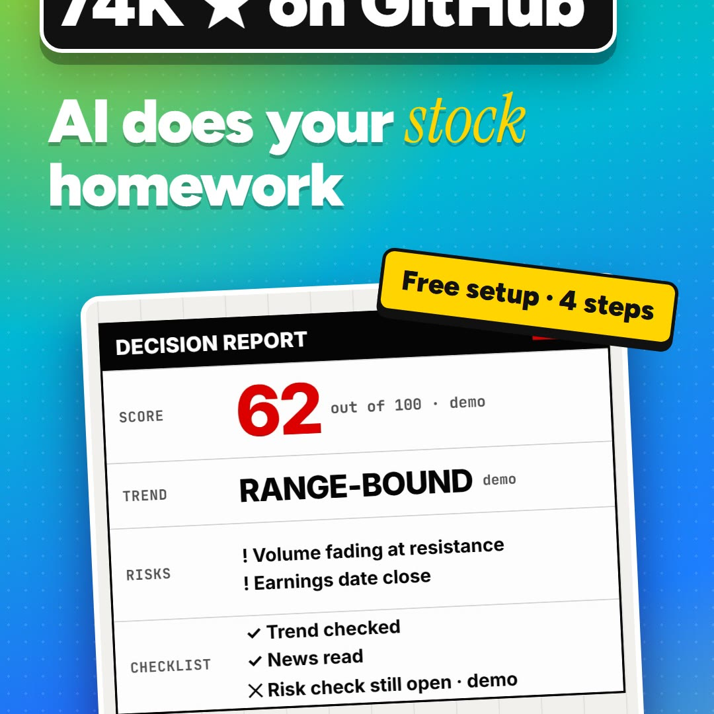

daily_stock_analysis: the 4-step setup guide
An open-source AI that reads the prices and news for your watchlist every weekday and sends you a decision report. For learning and research, not investment advice.

Quick start
- Open github.com/ZhuLinsen/daily_stock_analysis and click Fork (top right).
- In your fork: Settings → Secrets and variables → Actions → add an AI key, one notification channel and STOCK_LIST.
- Actions tab → enable workflows → Daily Stock Analysis → Run workflow.
What it is
daily_stock_analysis is a free, MIT-licensed project by ZhuLinsen on GitHub (about 74,000 stars on 24 Nov 2026). For each stock on your watchlist it pulls quotes, technical indicators, news and announcements, and an AI model writes a decision report: a core conclusion, a score, the trend, risk alerts, catalysts and an action checklist.
It covers A-shares, Hong Kong, US, Japanese, Korean and Taiwan stocks, plus ETFs. It runs on the AI model you bring: Gemini, Claude, an OpenAI-compatible provider (DeepSeek, Qwen and others) or a local Ollama model.
The project's own words: it is for learning and research use only and is not investment advice. Do your own research.
Before you start
You need a free GitHub account, and one AI API key (Gemini, Anthropic Claude, or an OpenAI-compatible provider).
What it costs: GitHub Actions runs it with no server; the README says a run takes about 2 to 5 minutes, about 44 to 110 minutes a month, well inside GitHub's free 2,000 minutes. Your AI key is billed by its provider per use (Gemini's free tier works but is rate-limited). The default market data is free, and the README warns free sources can be rate-limited.
Step 1: Fork the repo
Open the repo page on GitHub and click Fork in the top-right corner. Your copy is where it runs.
Step 2: Add your secrets
In your fork: Settings → Secrets and variables → Actions → New repository secret. Add one of each:
- An AI key: GEMINI_API_KEY, or ANTHROPIC_API_KEY, or OPENAI_API_KEY with OPENAI_BASE_URL and OPENAI_MODEL for DeepSeek, Qwen and other OpenAI-compatible providers.
- Where the report goes: TELEGRAM_BOT_TOKEN + TELEGRAM_CHAT_ID, or DISCORD_WEBHOOK_URL, or SLACK_BOT_TOKEN + SLACK_CHANNEL_ID, or EMAIL_SENDER + EMAIL_PASSWORD (WeChat Work and Feishu webhooks work too).
- STOCK_LIST: your watchlist, codes separated by commas (formats under Try these).
- Recommended: one news search key, such as SERPAPI_API_KEYS or TAVILY_API_KEYS. The README says news search strongly improves the report.
Step 3: Enable Actions
Open the Actions tab of your fork and click "I understand my workflows, go ahead and enable them".
Step 4: Run the workflow
Actions → Daily Stock Analysis → Run workflow → Run workflow. Your first report arrives on your channel when it finishes. After that it runs on its own every weekday at 18:00 Beijing time (10:00 UTC) and skips non-trading days.
Try these
- STOCK_LIST code formats, from the README's own example (formats, not picks):
[US ticker],hk[5-digit HK code],[6-digit A-share code],[code].T,[code].KS,[code].TW - Test without sending anything (local copy):
python main.py --dry-run - Analyse a few codes once:
python main.py --stocks [CODE1],[CODE2] - A market review instead of single stocks:
python main.py --market-review - The web workspace on your own computer:
python main.py --webui - Use it from Claude Code:
/plugin marketplace add ZhuLinsen/daily_stock_analysis - Then install the plugin:
/plugin install daily-stock-analysis@daily-stock-analysis - The local copy, for the commands above:
git clone https://github.com/ZhuLinsen/daily_stock_analysis.git
Gotchas
The schedule is set in Beijing time (18:00, 10:00 UTC); change the cron line in .github/workflows/00-daily-analysis.yml for another time.
Ollama suits a local or Docker setup; the README says GitHub Actions runs smoother with a cloud API key.
Free data sources can be rate-limited or change without notice; the README suggests token-based sources (Tushare, Longbridge, TickPlus) for steadier data.
The report is the AI's reading of the data, not advice. Check it before you act on anything.
To stop it: Actions → Daily Stock Analysis → the "..." menu → Disable workflow. To remove it: your fork's Settings → Delete this repository.
Links
The repo: https://github.com/ZhuLinsen/daily_stock_analysis
English README: https://github.com/ZhuLinsen/daily_stock_analysis/blob/main/docs/README_EN.md
Full guide: https://github.com/ZhuLinsen/daily_stock_analysis/blob/main/docs/full-guide_EN.md